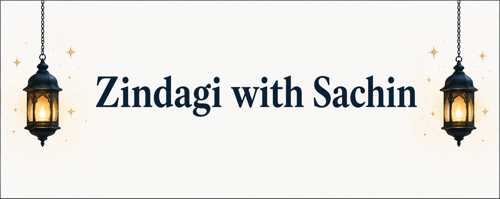

Every Story Has A Meaning
Welcome — I'm Sachin. This is where I write down the moments, people, and lessons that have shaped my life, so they're never forgotten.
My Story

My Story
This is where I share my personal journey, experiences, and memories. Every chapter of life has taught me something valuable — through success, failure, friendship, or challenge. This section is a growing collection of stories that have shaped who I am, written to preserve those memories and, hopefully, to inspire anyone who reads them. As this website grows, I'll keep adding new stories filled with real emotions, honest lessons, and moments that define my life's journey.
Read Full StoryFrom the Journal
A few more stories from along the way.
My First Journey
Everyone has a story that changes their life. This one is dedicated to my personal journey — childhood memories, struggles, achievements, and the lessons I learned along the way. I hope it reminds you to never give up and always believe in yourself.
Read Full StoryLife Lessons
Life teaches us through happiness, failures, friendships, family, and unexpected challenges. Here I share moments that taught me valuable lessons and helped me grow stronger.
Read More
Hello, I'm Sachin Kumar Jha
Welcome to Zindagi with Sachin, my personal blogging space where I write about my past life stories, unforgettable memories, life experiences, and motivational moments. Thank you for visiting — I hope something here resonates with you.
More About Me